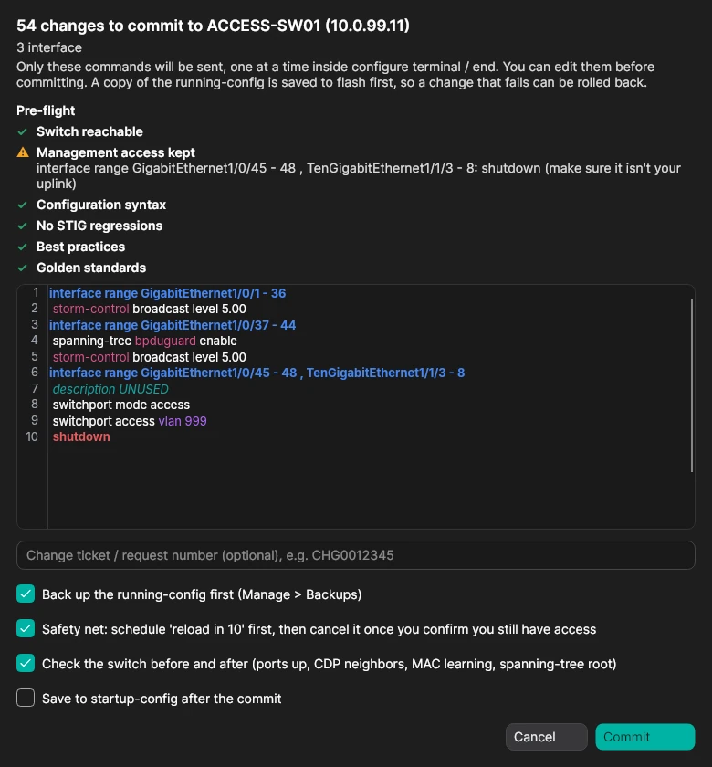
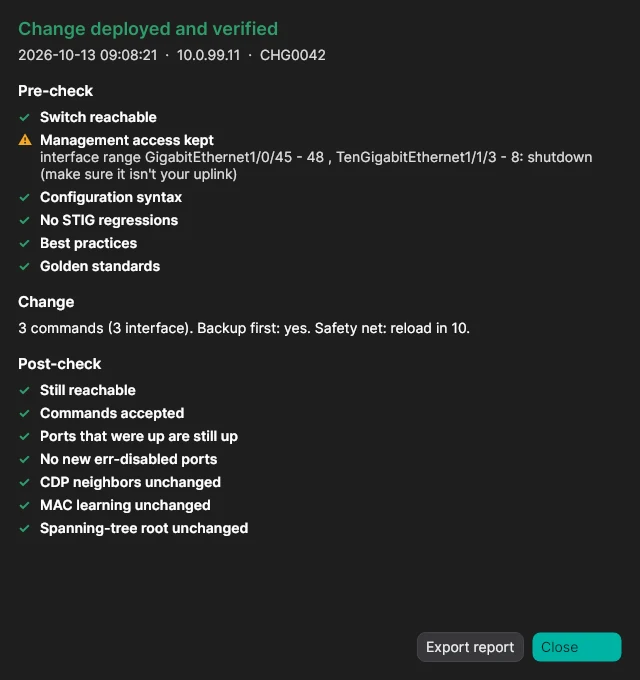
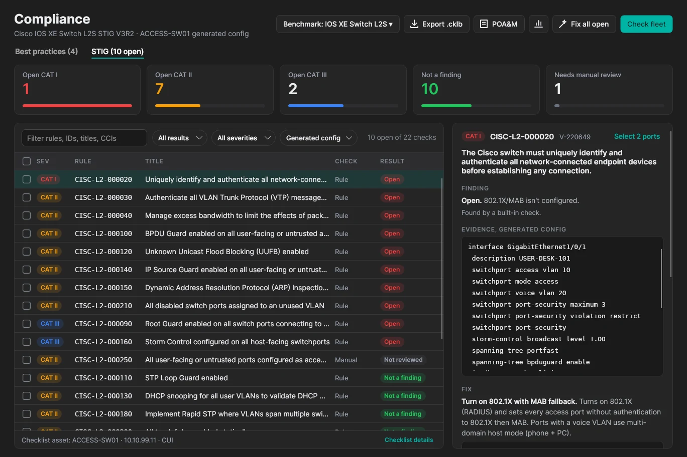
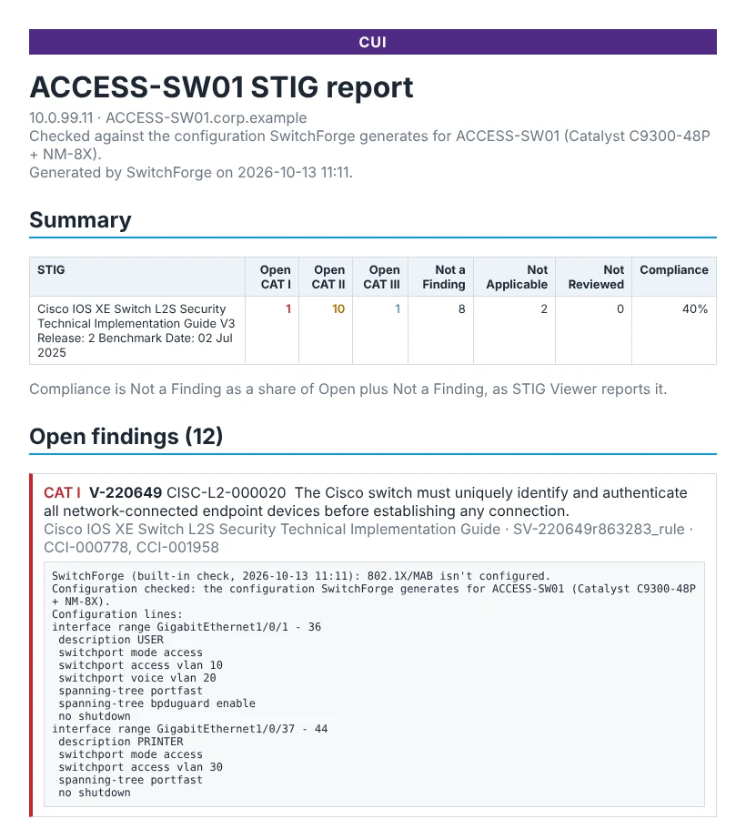
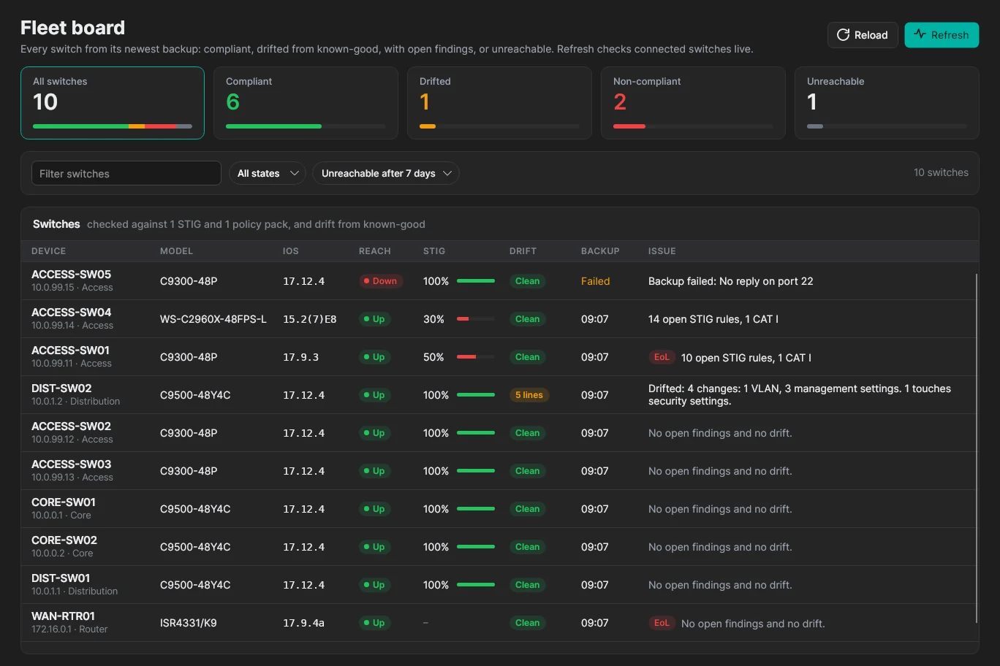
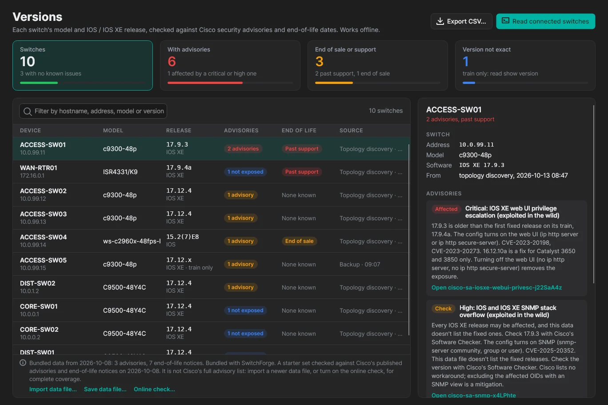
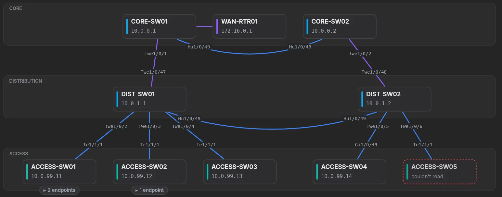

Building a config
You can work on the drawing of the switch or in the text editor. The two stay in sync, and none of this needs a switch connected.
The debugger
It checks each line as you type. Problem lines get a red underline in the editor, and every issue in the list has a Why? button that explains what's wrong.
- Values that can't work, like an NTP server of 10.20.30.999 or a static route with an impossible next hop
- Typos, with a one-click fix: "privilage" becomes "privilege"
- Overlapping subnets and duplicate addresses the switch would reject
- Open STIG findings, listed alongside as compliance items

ACL builder
Named standard and extended ACLs, one rule per row, with the CLI it will generate shown underneath.
- Drag rules into order, or use the arrows
- Turn on logging per rule, or add a logged deny any in one click
- Apply the ACL to the VTY lines (who may SSH in), an SVI or a routed port, in or out
- Extended rules take a protocol, source, destination and ports

Also here
- Import a running-config. It fills in the settings it understands and keeps every other line as custom CLI. The switch model is picked up from the file.
- Copy and paste ports. Right-click a port to copy its settings, then paste them onto other ports.
- Scripts. Config snippets with variables, show-command reports, and Tcl or Python to run on the switch.
- Bulk. Stage many switches from a spreadsheet, or run commands on several at once.
Pushing changes to a switch
Safe Commit works out which lines changed and sends only those. Commits from the editor, from fixing drift, from Bulk and from the MAC finder all go through it.


Before sending
Is the switch reachable? Would this cut off management access? Any debugger errors, or new STIG or golden-standard failures?
While sending
Asks for a ticket number, takes a backup, then sets a reload-in-10 (or an NX-OS checkpoint) so a change that locks you out undoes itself.
After sending
Checks the switch is still reachable and accepted every command, then compares ports, err-disabled state, CDP neighbors, MAC learning and the spanning-tree root with before.
This flow has been tested against a simulated switch. Real Catalyst and Nexus hardware is what I'd most like testers to try it on, ideally a lab switch first.
STIG checks
Load a DISA STIG and each rule is checked against the config, with the config lines that back up the result.
Rule by rule
Load the zip from DISA, an XCCDF file, or a STIG Viewer checklist. The screenshot shows the Cisco IOS XE Switch L2S STIG, V3R2. Rules it can't decide from the config are left for you to review instead of being marked as passed.
- The config lines behind each result go into the checklist as evidence, with secrets masked
- A fix button for each rule it knows how to fix, or Fix all open findings, with Undo
- Your own status, comments, finding details and severity overrides
- Export a
.cklbfor STIG Viewer 3 and eMASS, or a.ckl

Reports
The review can be saved as a report to read or print, or as Excel or CSV.
- The classification banner from the checklist's marking
- A summary per STIG: open findings by category, and the same compliance score STIG Viewer shows
- Each open finding with its rule, CCIs and the config lines behind it

Also here
- NIST 800-53 controls. Import DISA's CCI list and each rule shows its controls, in the app and in reports.
- POA&M draft. One item per open finding, laid out like the eMASS spreadsheet.
- Whole-fleet runs. Check every switch's newest backup at once, then save a report or checklist for each.
- Policy packs. Your own required and forbidden lines, per device role.
Keeping track of a lot of switches
Most of this works from scheduled backups, so you don't have to log in to each switch to see where it stands.
Fleet board
Every switch on one screen, judged from its newest backup.
- Counts of compliant, drifted, non-compliant and unreachable switches at the top
- The reason on each row: a failed backup, the policy-pack lines it's missing, or what drifted
- Refresh to check the switches you're connected to right now

What changed?
Everything that changed on a switch since its last known-good backup, written out in words, with security-related changes at the top.
- A backup is marked known-good (the star) after a Safe Commit passes, or you can mark one yourself
- In this example, an SNMPv3 group was removed and an SNMP community was added
- Other changes are grouped by interfaces, VLANs and management, with the full diff below

IOS versions
Each switch's model and IOS or IOS XE release, checked against Cisco security advisories and end-of-life dates.
- Shows which advisories apply, including whether the config actually turns on the affected feature
- Flags end of sale and end of support per switch
- Works offline from bundled data. An online advisory check is optional and uses your own Cisco API key

ip http server.Topology
Discovered from CDP and LLDP on the switches you're connected to, and drawn in layers. Double-click a device to open SSH, its config or its port map.
- Core, distribution and access layers are laid out for you
- Trunks are blue and routed links purple, with the port name at each end
- Phones, access points and hosts are grouped under their switch

Also here
- Scheduled backups. Hourly to weekly, with a drift alert that turns red when security settings change.
- Search every backup. Find which switches have, or are missing, a given config line.
- Find a MAC or IP. Trace a device to the switch port it's plugged into, then configure that port.
- Topology overlays. Color the map by STIG results or drift, and compare two discovery snapshots.
Where your data goes
It stays on your PC. Projects, backups and settings live in your Windows profile, and there's no account and no telemetry.
- No internet needed. The license is checked on the PC, so it runs on networks with no internet at all. The only outside connection is the optional Cisco advisory lookup, and only if you add your own API key.
- FIPS mode. SSH uses approved algorithms only, you confirm a host key before it's trusted, Telnet is off, and TFTP asks you each time and gets logged.
- Secrets. Local accounts and the enable secret are stored as type 9 or type 8 hashes. Secrets are masked in STIG evidence and deployment records.
- Read-only profiles. For auditors and anyone who should look but not change configs or touch switches.
- Changelog. Every edit, commit and export is logged, and each deployment's record is saved with secrets removed.
- SBOM and checksums. Each release comes with a CycloneDX software bill of materials and SHA-256 checksums.
Supported models
- Catalyst, IOS XE
- 9300, 9200 and 9200L, 9500
- Catalyst, classic IOS
- 2960-X
- Nexus, NX-OS
- 93180YC-FX, 9348GC-FX3PH
- Routers
- ISR 4331, 4431 and 1111-8P, Catalyst 8200, Cisco 2911
It connects over SSH, a console cable, SCP, or its own built-in TFTP server.
Download
Windows 10 or 11, 64-bit. Nothing else to install.
- Check the download, if you like. Run
Get-FileHashin PowerShell and compare it withSHA256SUMS.txt. - Get past SmartScreen. Test builds aren't code-signed yet, so Windows may warn you. Click More info, then Run anyway.
- Load your license. Open the
.sflicfile from your invitation on the first screen. Without it the app opens read-only.
Questions
Do I need a switch to try it?
No. Design, the debugger, ACLs, the STIG checks and reports all work offline, on the built-in sample switch or a config file you import. You only need a switch to read its live config or push changes.
What kind of feedback helps most?
Anything that surprised you. A check that's wrong for your config, a screen you couldn't figure out, a crash, or a step that took longer than doing it by hand. Results from real hardware are especially useful. Please include the version number (on the sign-in screen) and what you were doing.
Which STIGs does it check?
The Cisco IOS XE switch STIGs (L2S and NDM), the router STIG, and NX-OS. Load the STIG from DISA's download, an XCCDF file or a STIG Viewer checklist. Rules it can't check automatically are left for you to review, and a checklist you load brings its existing statuses and comments with it.
Does it need internet access?
No. The license is checked on the PC, and the IOS end-of-life data is bundled. The only outside connection is the optional Cisco advisory lookup on the Versions page, which you turn on with your own Cisco API key.
Where is my data kept?
In your Windows profile, under %AppData%\SwitchForge: projects, backups, settings and the changelog. Remembered session passwords are protected with Windows DPAPI. Nothing is uploaded.
What does read-only mean?
Without a valid license, or on a read-only profile, you can open projects and look around, but you can't change configs or push to switches. When a tester license runs out, your projects and backups stay where they are.
How do I report a problem?
Reply to whoever sent you the invitation.